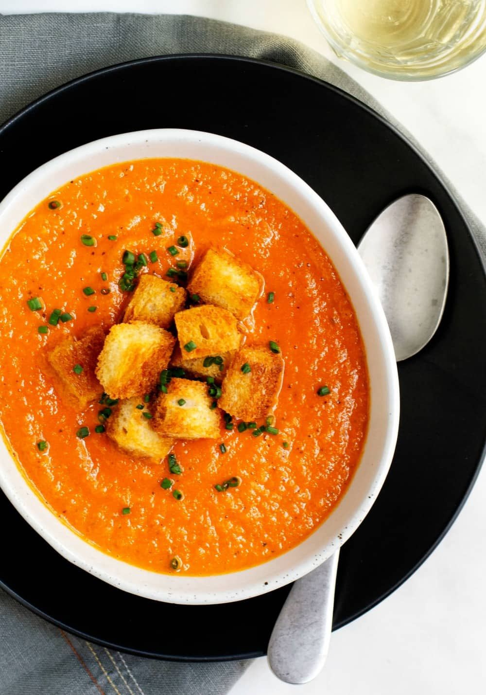

Tomato Bisque

Description
Easy creamy Tomato Bisque is the perfect comfort food on a chilly day. A savory fusion of tomatoes and aromatic vegetables with the slightest whisper of crushed red pepper heat, blended until smooth and finished with cream and a scatter of crispy croutons. So quick and easy to prepare! You'll be enjoying a bowl in less than 30 minutes.
Ingredients
- Butter: salted butter or unsalted (whatever you have on hand)
- Onion: yellow onion, white onion or sweet onion
- Carrot: peeled or unpeeled, your choice
- Celery: use an inner celery rib for the best flavor and texture
- Garlic: fresh cloves that are firm with smooth skin
- Canned Whole Tomatoes: be sure to use the juice as well
- Dried Basil: or twice the amount of fresh basil if you have it on hand
- Heavy Cream: a little goes a long way to give this bisque its rich and silky flavor
- Crushed Red Pepper: just a pinch for a very gentle heat
Steps
- Heat butter and olive oil in a large saucepan over medium heat until sizzling. Add onion, carrot, celery and garlic; cook and stir until onion is translucent, about 5 minutes. Add tomatoes, water, salt, pepper, crushed red pepper and basil. Stir and bring to boil; reduce heat and simmer 15 minutes.
- To finish the soup, remove from heat and stir in cream; blend in the pan with an immersion blender or blend in batches in a traditional blender. (Important note: Blending hot liquids in a traditional blender will blow the lid off which will make a mess and could burn you. Instead, use a towel to cover the top of of the pitcher while blending instead of the lid. )
- Return blended soup to pan and season to taste with salt and pepper; reheat to simmer if needed.
- Meanwhile make the croutons: Preheat oven to 400˚F. Add bread cubes to a medium bowl and drizzle with olive oil; toss to coat. Spread cubes in a single layer on a baking sheet and season to taste with kosher salt. Bake 15 to 20 minutes until golden and crisp. Remove from oven and set aside.
- Serve soup hot topped with croutons.